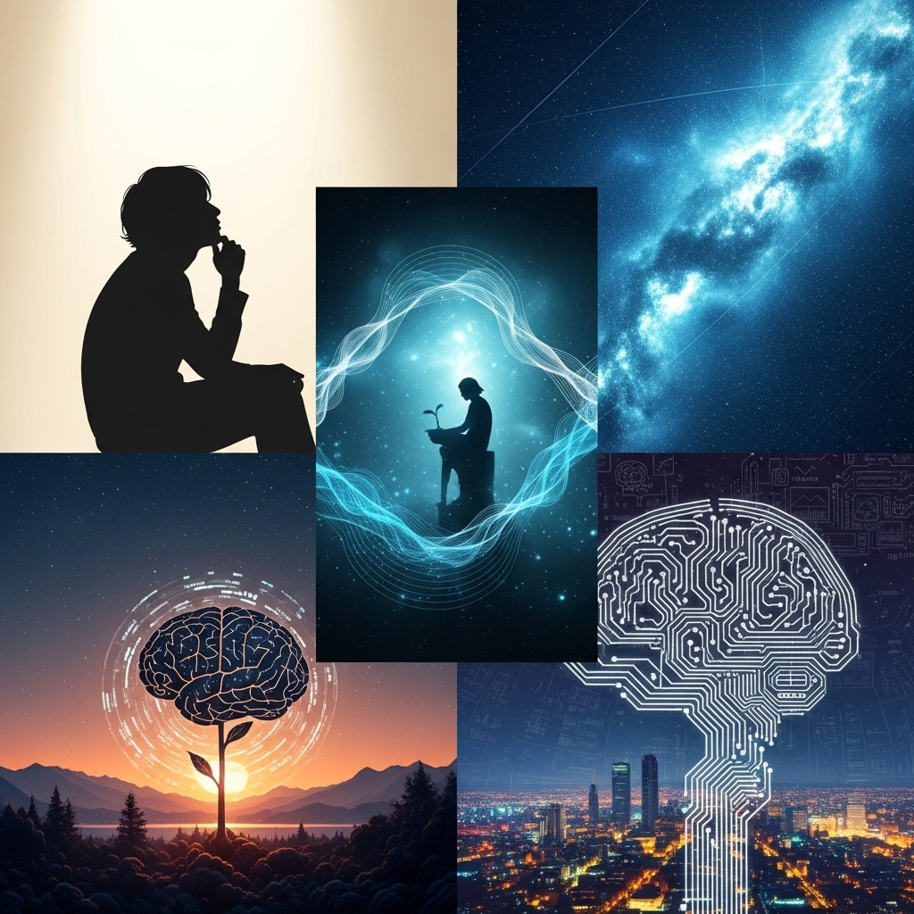

人生を豊かにする「ウェルビーイング」の探求：真の幸福と持続可能な生き方への道

導入
私たちの誰もが、心穏やかで満たされた日々を送りたいと願っています。しかし、目まぐるしく変化する現代社会において、その願いを叶えることは容易ではありません。情報過多、ストレス、人間関係の複雑さ、そして未来への漠然とした不安――私たちは常に様々な課題に直面し、時に立ち止まって「本当の幸せとは何だろうか？」と自問自答することがあります。
かつて、幸福の尺度は経済的な豊かさや物質的な充足感に求められることが多かったかもしれません。しかし、今日、私たちはより深いレベルでの「豊かさ」に目を向けるようになっています。それが「ウェルビーイング（Well-being）」という概念です。ウェルビーイングとは、単なる一時的な快楽や問題がない状態を指すものではありません。それは、心身ともに健康で、社会と良好な関係を築き、人生に意味や目的を見出し、自分らしく生きている状態を包括的に表す言葉です。
この広がり続けるウェルビーイングという考え方は、個人の日々の暮らしから、企業経営、都市開発、さらには国家の政策に至るまで、あらゆる領域でその重要性が認識され始めています。それは、私たちがこれからの時代を、より豊かに、より持続可能に生きるための羅針盤となる可能性を秘めているからです。
この記事では、このウェルビーイングという概念を多角的に掘り下げ、その本質を理解することから始めます。そして、個人のウェルビーイングを高める具体的な方法や、それが社会全体にどのように波及していくのかを探ります。私たちが、自分自身と、そして大切な人々、さらには地球全体のウェルビーイングを育むために、どのような一歩を踏み出すことができるのか。落ち着いたトーンで、しかししっかりと、そして何よりも親しみやすい言葉で、皆さんと共にこの探求の旅を進めていきたいと願っています。この旅の先に、皆さんが自分らしい「真の幸福」を見つけるヒントが散りばめられていることを願ってやみません。
第1章：ウェルビーイングとは何か？その多角的な理解
ウェルビーイングという言葉は、近年急速に私たちの生活に浸透してきました。しかし、その意味するところは非常に広範であり、人によって、あるいは文脈によって、捉え方が異なることも少なくありません。この章では、ウェルビーイングの基本的な定義からその歴史的背景、そしてなぜ現代社会においてこれほどまでに注目されるようになったのかを、丁寧にひも解いていきたいと思います。
1.1. 概念の定義と歴史的背景：哲学、心理学からの視点
ウェルビーイングは、英語の"Well-being"が語源であり、「良い状態であること」「幸福であること」「安寧」といった意味合いを持ちます。しかし、単に「幸福」と訳してしまうには、そのニュアンスはもっと深く、多層的です。
古代ギリシャの哲学者アリストテレスは、「エウダイモニア（Eudaimonia）」という概念を提唱しました。これは「よく生きる」「人間として最高の状態にある」といった意味で、単なる快楽（ヘドニア）とは異なり、理性を用いて徳を追求し、自己の潜在能力を最大限に発揮することによって得られる、持続的な幸福の状態を指しました。このエウダイモニアの考え方は、現代のウェルビーイング研究、特にポジティブ心理学における「持続的な幸福」や「人生の意味」といった側面と深く共鳴しています。私たちが今日考えるウェルビーイングのルーツは、すでに2000年以上前の哲学の中に息づいていたのです。
近代に入り、心理学が発展するにつれて、幸福や心の健康に関する研究が活発化しました。20世紀後半には、精神疾患の治療に重点を置いてきた従来の心理学に対し、人間の強みやポジティブな側面、そしてどうすれば人がより良く生きられるかを探求する「ポジティブ心理学」が誕生します。マーティン・セリグマン教授をはじめとするポジティブ心理学の研究者たちは、幸福を構成する要素を科学的に分析し、ウェルビーイングの概念をより具体的に、体系的に定義していきました。彼らの研究は、ウェルビーイングが単なる主観的な感情だけでなく、客観的な要素や行動によっても育まれることを示しています。
このように、ウェルビーイングは古代からの哲学的な問いに端を発し、現代の科学的な研究によってその理解が深められてきた、非常に奥行きのある概念なのです。それは、私たちが人間としてどのように生きるべきか、そして何が私たちを真に満たすのかという、普遍的な問いに対する現代的な答えの一つとも言えるでしょう。
1.2. 幸福との違い：一時的な感情から持続的な状態へ
「ウェルビーイング」と「幸福」はしばしば同じ意味で使われますが、厳密には異なるニュアンスを持っています。この違いを理解することは、ウェルビーイングの本質を捉える上で非常に重要です。
幸福（Happiness）は、多くの場合、一時的な感情や快楽を指します。例えば、美味しい食事をした時の喜び、好きな趣味に没頭している時の楽しさ、宝くじが当たった時の興奮など、特定の出来事や状況によって引き起こされるポジティブな感情です。もちろん、これらの一時的な幸福感は人生を彩る上で不可欠なものですが、その多くは持続性に欠け、状況が変われば薄れてしまうこともあります。
一方、ウェルビーイングは、より広範で持続的な状態を指します。それは、一時的な感情の起伏を超えて、人生全体に対する満足感、充実感、そして生きる意味を見出している状態を意味します。例えるならば、幸福が「美味しいケーキを一口食べた時の甘美さ」であるとすれば、ウェルビーイングは「栄養バランスの取れた食事を日々続けることによって得られる、健やかな体と心」のようなものです。後者は、単なる快楽を超え、長期的な健康と活力を提供します。
ウェルビーイングは、ただ単に「気分が良い」という感情的な側面だけでなく、人生の目的意識、良好な人間関係、自己成長、そして社会への貢献といった、より深い次元の要素を含んでいます。困難に直面した時でも、レジリエンス（回復力）を発揮し、前向きに対処できる心の状態もウェルビーイングの一部です。したがって、ウェルビーイングは、一時的な幸福感の積み重ねによって築かれるものではありますが、それ自体が目的ではなく、より本質的で、人生の質を高めるための基盤となる概念だと言えるでしょう。
1.3. 主要なモデルとフレームワーク（PERMAモデル、WHOの定義など）
ウェルビーイングの概念が多岐にわたるため、研究者たちはその構成要素を明確にするための様々なモデルやフレームワークを提唱してきました。これらを理解することで、ウェルビーイングをより具体的に捉え、日々の生活に取り入れるヒントを見つけることができます。
最も広く知られているモデルの一つが、ポジティブ心理学の提唱者であるマーティン・セリグマン博士が提唱した「PERMAモデル」です。PERMAは、ウェルビーイングを構成する5つの要素の頭文字を取ったもので、それぞれが独立しながらも相互に影響し合うと考えられています。
- P (Positive Emotion：ポジティブな感情)：喜び、感謝、満足感、希望、好奇心といったポジティブな感情を経験すること。これらは一時的なものですが、積み重なることで心の健康を育みます。
- E (Engagement：エンゲージメント)：時間の流れを忘れ、完全に没頭できる活動（フロー体験）を持つこと。仕事や趣味において、自分のスキルと挑戦のバランスが取れた時に感じられます。
- R (Relationships：良好な人間関係)：家族、友人、同僚、地域社会の人々との温かく、支え合いのある関係を築くこと。人間は社会的な生き物であり、質の高い人間関係はウェルビーイングの重要な源です。
- M (Meaning：人生の意味と目的)：自分よりも大きなもの（例えば、家族、コミュニティ、社会、信仰など）に貢献していると感じたり、自分の人生に意味や目的を見出すこと。
- A (Accomplishment/Achievement：達成感)：目標を設定し、それを達成するために努力し、成功を収めること。自己効力感を高め、自信を育む要素です。
これらの要素は、どれか一つだけがあれば良いというものではなく、バランスよく育むことが重要だとされています。PERMAモデルは、私たちがウェルビーイングを意識的に高めていくための具体的な指針を与えてくれるのです。
また、世界保健機関（WHO）は、ウェルビーイングをより広範な視点から定義しています。WHOの健康の定義は、「身体的、精神的、社会的に完全に良好な状態であり、単に疾病がないとか虚弱でないということではない」とされています。この定義は、ウェルビーイングが単なる個人の内面的な状態だけでなく、身体の健康、そして社会との関わりを含んだ、より包括的な概念であることを明確に示しています。さらに、WHOは精神的健康を「個人が自身の能力を認識し、人生の通常のストレスに対処でき、生産的かつ実りある仕事ができ、コミュニティに貢献できる状態」と定義しており、これもウェルビーイングの重要な側面を捉えています。
これらのモデルや定義は、ウェルビーイングが単一の概念ではなく、多面的な要素から成り立っていることを示唆しています。私たちが自分自身のウェルビーイングを考える際には、これらの要素が自分の生活の中でどのように満たされているか、あるいは不足しているかを振り返る良い機会となるでしょう。
1.4. なぜ現代社会でウェルビーイングが注目されるのか（ストレス社会、情報過多、物質主義の限界）
ウェルビーイングという概念がこれほどまでに注目されるようになった背景には、現代社会が抱える特有の課題と、私たちの価値観の変化が深く関わっています。かつては経済成長や物質的な豊かさが社会の目標とされ、それが個人の幸福に直結すると考えられてきました。しかし、その価値観が限界を迎えつつあることを、私たちは肌で感じ始めています。
ストレス社会の到来
現代社会は、まさに「ストレス社会」と形容されることが少なくありません。グローバル化、IT化の進展は、私たちの生活を便利にする一方で、常に競争に晒され、変化への適応を求められる状況を生み出しました。仕事のプレッシャー、長時間労働、人間関係の希薄化、そして先の見えない未来への不安。これらは私たちの心身に大きな負担をかけ、うつ病や適応障害といった心の不調を訴える人が増加の一途をたどっています。このような状況下で、単に病気がないというだけでなく、積極的に心身の健康を維持し、充実した生活を送るためのウェルビーイングの重要性が、社会全体で認識されるようになりました。
情報過多とデジタルデトックスの必要性
インターネットやスマートフォンの普及により、私たちはかつてないほど多くの情報にアクセスできるようになりました。しかし、この情報過多は、時に私たちのウェルビーイングを脅かす要因ともなります。SNSでの「いいね」の数に一喜一憂したり、他人の成功と比較して自己肯定感を損なったり、常に情報に接続されていることで心が休まる暇がなかったり。こうしたデジタル疲れや情報疲れは、集中力の低下、睡眠不足、そして精神的な疲弊を引き起こします。ウェルビーイングを追求する中で、デジタルデバイスとの健全な距離を保ち、意識的に「デジタルデトックス」を行うことの重要性が叫ばれるようになっているのは、このためです。
物質主義の限界と新たな価値観
高度経済成長期には、より多くのモノを所有すること、より高い地位を得ることが幸福の象徴とされてきました。しかし、先進国を中心に、物質的な豊かさが一定の水準に達すると、それ以上のモノの所有が必ずしも幸福感の向上に繋がらないということが明らかになってきました。むしろ、モノを追い求めることで得られる幸福は一時的であり、環境問題や格差といった新たな社会問題を生み出す原因ともなっています。
こうした背景から、私たちは物質的な豊かさだけでなく、精神的な充足感、人とのつながり、社会貢献、自己成長といった、より本質的な価値に目を向けるようになりました。持続可能な社会の実現が喫緊の課題となる中で、地球環境や将来世代のウェルビーイングにも配慮した生き方が求められるようになっています。
ウェルビーイングは、こうした現代社会の課題に対する一つの答えとして、私たちに新たな視点と行動の指針を与えてくれます。それは、個人が心身ともに健やかで充実した生活を送るだけでなく、より良い社会を築き、持続可能な未来へと繋げていくための、不可欠な要素として位置づけられているのです。
第2章：個人のウェルビーイングを高める要素
ウェルビーイングが多面的な概念であることは理解できました。それでは、私たち一人ひとりが、日々の生活の中でどのようにして自身のウェルビーイングを高めていけば良いのでしょうか。この章では、ウェルビーイングを構成する主要な要素を具体的に掘り下げ、それぞれの側面からどのようにアプローチできるかを詳しく見ていきましょう。
2.1. 精神的ウェルビーイング：心の健康とレジリエンス
心の健康は、ウェルビーイングの基盤となる最も重要な要素の一つです。精神的な安定と、困難に立ち向かう力であるレジリエンスを育むことは、充実した人生を送る上で不可欠です。
2.1.1. ポジティブ心理学の知見（感謝、楽観主義、マインドフルネス）
ポジティブ心理学は、人間の強みや美徳に焦点を当て、人がいかにして充実した人生を送れるかを科学的に探求する分野です。その知見は、精神的ウェルビーイングを高める上で非常に有効です。
- 感謝の力: 感謝の気持ちを持つことは、私たちの心の状態に大きな影響を与えます。日々の小さな出来事や、周りの人々からのサポートに感謝することで、ポジティブな感情が増幅され、幸福感が高まることが研究で示されています。感謝の日記をつける、感謝の言葉を伝えるといった習慣は、心の豊かさを育む簡単な一歩です。例えば、一日の終わりに「今日あった良いこと」を3つ書き出すだけでも、脳がポジティブな側面に注目するよう訓練され、心の状態が徐々に変化していくのを実感できるでしょう。
- 楽観主義の育成: 楽観主義とは、困難な状況においても、良い結果を期待し、前向きな姿勢を保つ心の持ち方です。これは生まれつきの性格だけでなく、意識的な練習によって育むことができます。失敗を一時的なものと捉え、そこから学びを得ようとする姿勢や、自分の力で状況を改善できると信じる自己効力感は、楽観主義の重要な要素です。ネガティブな思考パターンに気づき、それをより建設的な視点に切り替える練習（認知再構成）も有効です。
- マインドフルネスの実践: マインドフルネスとは、「今、この瞬間に意識を向け、判断せずに受け入れる」心の状態です。瞑想を通じて実践されることが多いですが、日常生活の中で、呼吸、身体感覚、五感に意識を向けるだけでも実践できます。マインドフルネスは、ストレス軽減、集中力向上、感情の調整能力向上に効果があることが科学的に証明されています。例えば、食事の際に一口一口の味や香りに意識を集中する、散歩中に足の裏の感覚や風の感触に注意を向けるなど、小さなことから始めることができます。これにより、過去の後悔や未来の不安にとらわれず、「今」を生きる力が養われます。
2.1.2. ストレスマネジメントと心のケア
現代社会において、ストレスは避けて通れないものです。しかし、ストレスを適切に管理し、心のケアを怠らないことで、精神的ウェルビーイングを維持することができます。
- ストレスの認識と対処法: まず、自分がどのような状況でストレスを感じやすいのか、そのサインは何かを認識することが重要です。頭痛、肩こり、不眠、イライラなど、身体的・精神的なサインに気づくことから始めましょう。そして、ストレス源を特定し、可能な限り対処策を講じます。例えば、仕事の量を調整する、人間関係の距離を見直すなどです。対処が難しいストレスに対しては、受け入れ方を学ぶことも大切です。
- リラクゼーション技法: 深呼吸、漸進的筋弛緩法、アロマセラピー、入浴などは、心身をリラックスさせる効果があります。特に深呼吸は、自律神経に働きかけ、心拍数を落ち着かせ、リラックス状態を促す簡単な方法です。一日の終わりに数分間、ゆっくりと深い呼吸を繰り返すだけでも、心に安らぎを取り戻すことができます。
- 趣味や自己表現の重要性: ストレスから離れて没頭できる趣味を持つことは、心の健康を保つ上で非常に有効です。絵を描く、音楽を聴く、文章を書く、園芸をするなど、自分が心から楽しめる活動は、自己表現の場となり、達成感や喜びをもたらします。これらの活動は、脳を活性化させ、ポジティブな感情を引き出すだけでなく、創造性を育むことにも繋がります。
- プロフェッショナルなサポートの活用: 心の不調が長引いたり、日常生活に支障をきたすようになったりした場合は、躊躇せずに専門家（カウンセラー、精神科医など）のサポートを求めることが重要です。心の病は、体の病気と同じように、早期のケアが大切です。専門家は、適切な診断と治療、そして対処法を教えてくれる信頼できる存在です。
精神的ウェルビーイングは、一朝一夕に築かれるものではありません。日々の小さな実践と、自分自身への優しさが、心の健康とレジリエンスを育む上で何よりも大切なのです。
2.2. 身体的ウェルビーイング：健康な体と活力
心と体は密接に繋がっています。身体が健康でなければ、心のウェルビーイングも維持することは困難です。このセクションでは、身体的ウェルビーイングを高めるための基本的な要素と、その重要性について掘り下げていきます。
2.2.1. 栄養、運動、睡眠の重要性
身体的ウェルビーイングの基盤となるのは、バランスの取れた栄養、適度な運動、そして質の良い睡眠です。これらは、私たちの活力、集中力、免疫力、そして心の状態に直接影響を与えます。
- 栄養: 「食べたもので体は作られる」という言葉の通り、私たちが口にするものは身体の機能、エネルギーレベル、そして気分にまで影響を及ぼします。加工食品や糖分の過剰摂取は、血糖値の急激な変動を引き起こし、気分のムラや集中力の低下に繋がることがあります。一方、野菜、果物、全粒穀物、良質なタンパク質、健康的な脂質をバランス良く摂取することで、身体は必要な栄養素を得て、最高のパフォーマンスを発揮できるようになります。特に、腸内環境は心の健康にも深く関わっていることが近年注目されており、発酵食品や食物繊維を積極的に摂ることも推奨されます。
- 運動: 運動は、単に体を鍛えるだけでなく、精神的なウェルビーイングにも多大な効果をもたらします。運動によって脳内でエンドルフィンなどの神経伝達物質が分泌され、ストレス軽減、気分の向上、不安の緩和に繋がります。また、規則的な運動は、心臓病、糖尿病、一部のがんなどの生活習慣病のリスクを低減し、骨密度を維持し、全体的な体力を向上させます。激しい運動でなくても、ウォーキング、ジョギング、ヨガ、ストレッチなど、自分に合った運動を週に数回、継続することが大切です。日常生活に運動を取り入れる工夫、例えば階段を使う、一駅分歩くなども有効です。
- 睡眠: 睡眠は、心身の回復と修復に不可欠な時間です。質の良い睡眠は、記憶の定着、集中力の向上、免疫機能の強化、感情の調整に重要な役割を果たします。睡眠不足は、イライラ、倦怠感、判断力の低下、そして長期的な健康問題を引き起こす可能性があります。自分にとって適切な睡眠時間（一般的には7～9時間）を確保し、規則正しい睡眠サイクルを確立することが大切です。寝る前のカフェイン摂取を控える、寝室の環境を整える（暗く、静かに、適温に）、寝る前にリラックスできる習慣（読書、軽いストレッチなど）を取り入れるといった「睡眠衛生」の実践が、質の良い睡眠へと繋がります。
2.2.2. 身体と心のつながり
身体と心は、互いに密接に影響し合っています。このつながりを理解することは、両方のウェルビーイングを高める上で不可欠です。
- ストレスと身体反応: ストレスを感じると、私たちの身体は「闘争・逃走反応」と呼ばれる生理的反応を示します。心拍数や血圧の上昇、筋肉の緊張、消化器系の活動低下などがそれにあたります。慢性的なストレスは、これらの身体反応が持続することで、免疫力の低下、高血圧、消化器系の不調、慢性的な痛みなど、様々な身体症状を引き起こす原因となります。
- 身体活動と精神的健康: 身体を動かすことは、心の健康に直接的なポジティブな影響を与えます。運動は、ストレスホルモン（コルチゾール）のレベルを下げ、気分を高める神経伝達物質（セロトニン、ドーパミン）の分泌を促します。また、運動を通じて達成感を味わうことで、自己肯定感が高まり、うつ病や不安障害の症状を軽減する効果も期待できます。太陽光を浴びながらの屋外での運動は、ビタミンDの生成を促し、概日リズム（体内時計）を整える効果もあり、精神的な安定に貢献します。
- マインドフルな身体感覚: 自分の身体に意識を向けるマインドフルネスの実践は、身体と心のつながりを深めます。例えば、食事をする際に、一口一口の味、香り、食感に意識を集中することで、より満足感を得られ、過食を防ぐことができます。また、軽いストレッチやヨガを通じて、身体の各部位の感覚に意識を向けることで、身体の緊張を和らげ、心のリラックスを促すことができます。
- セルフケアとしての身体的アプローチ: 自分の身体を慈しみ、ケアすることは、自分自身を大切にする行為そのものです。健康的な食事、定期的な運動、十分な睡眠は、単なる習慣ではなく、自分への敬意と愛の表現です。これらの習慣を意識的に取り入れることで、私たちは身体の活力を維持し、それが心の安定と充実感へと繋がっていくのを感じることができるでしょう。
身体的ウェルビーイングは、単なる健康の維持を超えて、私たちが日々の生活をエネルギッシュに、そして前向きに送るための土台となります。心身のつながりを意識し、両方の健康を育むことが、真のウェルビーイングへと繋がる道なのです。
2.3. 社会的ウェルビーイング：人とのつながりと共生
人間は社会的な生き物であり、他者とのつながりなくして真のウェルビーイングを享受することはできません。良好な人間関係を築き、コミュニティの一員として貢献することは、私たちの心の充足感と人生の意義を深める上で不可欠です。
2.3.1. 良好な人間関係の構築
質の高い人間関係は、ウェルビーイングの最も強力な予測因子の一つであると、多くの研究が示しています。家族、友人、パートナー、同僚といった人々とのつながりは、私たちに安心感、所属感、そして喜びをもたらします。
- 信頼と共感: 良好な人間関係の基盤は、信頼と共感です。相手の言葉に耳を傾け、感情を理解しようと努める「傾聴」は、相手に寄り添う姿勢を示す重要なスキルです。自分の弱さや感情をオープンにすることで、相手もまた心を開きやすくなり、より深い信頼関係が築かれます。
- 積極的なコミュニケーション: 感謝の気持ちやポジティブな感情を積極的に言葉で伝えること、意見の相違があった際には建設的な対話を心がけることなど、コミュニケーションの質を高めることが大切です。また、デジタルツールが普及した現代において、対面でのコミュニケーションや、声を聞くことの重要性も再認識されています。
- 境界線の設定: どんなに親しい関係であっても、お互いのプライバシーや価値観を尊重し、健全な境界線を設定することは重要です。過度な依存や干渉は、関係を損なう原因となることがあります。自分の意見を尊重し、相手の意見も尊重する「アサーティブネス」のスキルは、健全な人間関係を築く上で役立ちます。
- 多様な関係性の重要性: 特定の少数の人に依存するだけでなく、様々なタイプの人々と良好な関係を築くことも、社会的ウェルビーイングを高めます。異なる視点や価値観に触れることで、自身の視野が広がり、新たな気づきを得ることができます。また、困難な時に頼れる人が複数いることは、心の安定にも繋がります。
2.3.2. コミュニティへの参加と貢献
人間関係は、個人間のつながりだけでなく、より大きなコミュニティや社会との関わりの中にも存在します。コミュニティへの参加や貢献は、私たちの存在意義や自己肯定感を高め、ウェルビーイングを深めます。
- 所属感と一体感: 地域活動、ボランティア活動、趣味のサークル、職場のチームなど、何らかのコミュニティに所属することは、私たちに「自分は一人ではない」という安心感と、一体感をもたらします。共通の目的を持つ仲間と共に活動することで、連帯感が生まれ、孤独感が軽減されます。
- 貢献することの喜び: 他者のために何かをすること、社会に貢献することは、私たち自身の幸福感を高める強力な源です。ボランティア活動を通じて困っている人を助ける、地域のお祭りやイベントに協力する、職場で同僚をサポートするなど、大小を問わず貢献の機会はたくさんあります。自分の行動が誰かの役に立っている、社会をより良くしていると感じることは、深い満足感と人生の意義をもたらします。
- 市民活動への参加: 地域の課題解決に向けた市民活動や、環境保護、人権擁護といった社会的な活動に参加することも、社会的ウェルビーイングを高めます。自分の関心のある分野で声を上げ、行動することで、社会の一員としての責任感と、変革に参加しているという充実感を得ることができます。
- デジタルコミュニティの活用: 物理的な距離がある場合でも、オンラインのコミュニティを通じて人々とつながり、情報を共有し、サポートし合うことができます。しかし、デジタルコミュニティは、対面での交流とは異なる側面を持つため、その利用方法には注意が必要です。現実世界での人間関係を補完するツールとして活用し、過度な依存や比較によるネガティブな影響を避けるバランス感覚が求められます。
社会的ウェルビーイングは、私たちを孤独から救い、人生に豊かさと意味をもたらします。人とのつながりを大切にし、社会の一員として貢献する意識を持つことが、より充実した人生を送るための鍵となるでしょう。
2.4. 目的・意義的ウェルビーイング：人生の意味と価値
私たちはなぜ生きているのか、何のために努力しているのか――そうした問いに対する答えを見つけることは、ウェルビーイングを深く感じ、持続させる上で不可欠な要素です。人生に意味や目的を見出し、自分の価値観に沿って生きることは、私たちに深い満足感と充実感をもたらします。
2.4.1. 自分の価値観の探求
人生の意味や目的は、一人ひとり異なります。それを探求するためには、まず自分自身の核となる価値観を理解することが出発点となります。
- 自己内省の時間: 忙しい日々の中で、立ち止まって自分自身と向き合う時間を持つことが大切です。どのような時に喜びを感じるか、何に情熱を燃やすことができるか、どのような信念を持っているか、何に不満を感じるか。これらの問いに向き合うことで、自分が本当に大切にしているものが何かが見えてきます。ジャーナリング（日記を書くこと）や瞑想は、自己内省を深める有効なツールです。
- 価値観の明確化: 家族、友人、健康、創造性、自由、貢献、挑戦、学習、安定など、私たちが大切にする価値観は多岐にわたります。自分の人生において、どの価値観を最も優先したいのかを明確にすることで、日々の選択や行動の指針が定まります。例えば、「家族との時間を大切にする」という価値観があれば、仕事の量を調整したり、週末の過ごし方を工夫したりするでしょう。
- 過去の経験からの学び: 過去の成功体験や困難を乗り越えた経験を振り返ることも、自分の価値観を理解する手がかりとなります。どのような時に充実感を感じたか、どのような困難を乗り越えることで成長できたか。そうした経験の中に、自分の強みや、人生で追求したいことのヒントが隠されていることがあります。
- ロールモデルからのインスピレーション: 自分が尊敬する人や、憧れる生き方をしている人からインスピレーションを得ることも有効です。彼らがどのような価値観を持って生きているのか、どのような行動をしているのかを学ぶことで、自分自身の価値観をより明確にし、目標を設定する助けとなります。
2.4.2. 貢献感と自己実現
自分の価値観を明確にしたら、それを基盤として、貢献感や自己実現へと繋がる行動を起こすことが、目的・意義的ウェルビーイングを高めます。
- 貢献することの喜び: 人は、自分だけのために生きるのではなく、他者や社会に貢献することで、深い喜びと充足感を得られるようにできています。それは、ボランティア活動のような大きなことでなくても構いません。職場で同僚を助ける、家族のために家事をする、友人の相談に乗る、地域のごみ拾いに参加するなど、日々の小さな貢献も、私たちに「自分は役に立っている」という感覚をもたらし、自己肯定感を高めます。自分のスキルや才能を活かして、誰かの役に立つことは、人生に深い意味を与えます。
- 目標設定と達成: 自分の価値観に基づいた目標を設定し、それに向かって努力することは、人生に方向性と意味を与えます。目標は、キャリアアップ、スキル習得、健康改善、新しい趣味の開始など、どんなものでも構いません。重要なのは、その目標が自分にとって意味のあるものであり、達成に向けてステップを踏んでいく過程で成長を実感できることです。目標達成の過程で経験する困難や挑戦も、乗り越えることで自己成長の機会となり、達成した時の喜びは格別です。
- 自己実現の追求: マズローの欲求段階説の最上位に位置する「自己実現」とは、自己の潜在能力を最大限に発揮し、自分らしく生きることを指します。これは、特定のゴールに到達することだけでなく、常に成長し、学び続け、自分の可能性を追求するプロセスそのものです。自分の興味や才能を掘り下げ、新しいことに挑戦し、失敗を恐れずに前進することで、私たちは自己実現の道を歩み、人生に深い意味と充実感をもたらすことができます。
- フロー体験の活用: 心理学者ミハイ・チクセントミハイが提唱した「フロー体験」とは、活動に完全に没頭し、時間感覚を忘れるほどの集中状態を指します。この時、私たちは最高のパフォーマンスを発揮し、深い喜びと充足感を感じます。自分のスキルレベルと挑戦の難易度が釣り合う活動を見つけ、意識的にフロー体験を増やすことは、目的・意義的ウェルビーイングを高める上で非常に有効です。
目的・意義的ウェルビーイングは、私たちが人生を主体的に生き、自分自身の存在価値を深く実感するための羅針盤となります。自分の価値観を探求し、貢献と自己実現の道を歩むことで、私たちは真に満たされた人生を創造することができるでしょう。
2.5. 経済的ウェルビーイング：安心と安定
経済的ウェルビーイングは、とかく見過ごされがちですが、私たちの心の安定と安心感に深く関わる重要な要素です。お金がすべてではないとはいえ、経済的な不安は精神的なストレスの大きな原因となり、他のウェルビーイングの側面にも悪影響を及ぼす可能性があります。経済的ウェルビーイングとは、単に高収入であることや富裕であることだけを指すのではなく、自分自身の経済状況を健全に管理し、将来に対する安心感を持てる状態を意味します。
2.5.1. 健全な金銭感覚と計画
経済的ウェルビーイングを築くためには、まず健全な金銭感覚を養い、計画的に資産を管理することが不可欠です。
- 収支の把握と予算管理: 自分の収入と支出を正確に把握することから始めましょう。家計簿をつける、アプリを利用するなど、自分に合った方法で毎月の収支を記録します。そして、生活費、貯蓄、投資、娯楽など、それぞれの項目に予算を割り当て、その範囲内で生活する習慣を身につけます。これにより、無駄な支出を減らし、お金の流れをコントロールできるようになります。
- 貯蓄と緊急資金の確保: 将来への不安を軽減するためには、貯蓄が不可欠です。特に、病気や失業など、予期せぬ事態に備えるための「緊急資金」を確保することは非常に重要です。一般的には、生活費の3ヶ月～6ヶ月分が目安とされています。この緊急資金があることで、万が一の事態にも落ち着いて対処できるようになり、精神的な安心感が大きく高まります。
- 賢い消費と投資: 欲しいものを衝動的に買うのではなく、本当に必要なものか、長期的に価値があるものかを考えて消費する習慣を身につけましょう。また、余剰資金がある場合は、NISAやつみたてNISA、iDeCoなどの制度を活用し、分散投資を行うことで、資産形成を計画的に進めることができます。投資はリスクを伴いますが、健全な知識と計画性を持って取り組むことで、将来の選択肢を広げ、経済的な安心感を高めることができます。
- 借金の管理と回避: クレジットカードの使いすぎや、高金利のローンは、経済的な重荷となり、精神的なストレスの大きな原因となります。可能な限り借金を避け、もしある場合は、計画的に返済を進めることが重要です。借金がウェルビーイングを著しく損なうことを理解し、賢明な金銭管理を心がけましょう。
2.5.2. 物質的な豊かさと幸福の限界
経済的な安定は重要ですが、物質的な豊かさが必ずしも幸福に直結するわけではないということも、ウェルビーイングを考える上で理解しておくべき重要な点です。
- 「十分な」収入の閾値: 研究によると、ある程度の収入までは幸福度が向上しますが、それを超えると、収入の増加が幸福度の上昇にほとんど影響を与えなくなるという「幸福の閾値」が存在すると言われています。この閾値は国や地域によって異なりますが、基本的な生活ニーズを満たし、少しの余裕がある程度で、それ以上の物質的な追求は、必ずしも幸福感を高めないことが多いのです。
- 比較の罠: 物質的な豊かさを追い求める過程で、私たちはしばしば他人と比較してしまいます。SNSなどで他人の豊かな生活を目にすると、「自分ももっと稼がなければ」「もっと良いものを買わなければ」といった焦りや劣等感を抱きがちです。しかし、このような比較は、多くの場合、私たちのウェルビーイングを損なう原因となります。本当に大切なのは、他者との比較ではなく、自分自身の価値観に基づいた「十分さ」を見つけることです。
- 経験への投資: 物質的なモノよりも、経験にお金を使う方が、長期的な幸福感に繋がりやすいという研究結果があります。旅行、習い事、コンサート、友人との食事など、思い出に残る経験は、私たちに喜び、学び、人とのつながりをもたらし、心の中に長く残ります。モノはいつか古くなったり飽きたりしますが、経験は私たちの一部となり、人生を豊かにする糧となります。
- 「足るを知る」という考え方: 経済的ウェルビーイングは、単に多くのお金を稼ぐことではなく、「足るを知る」という心の状態にも深く関わっています。自分にとって何が本当に必要で、何が自分を幸せにするのかを理解し、それ以上のものを無理に追求しない姿勢は、無駄な競争から解放され、心の平穏をもたらします。シンプルな生活の中に豊かさを見出すミニマリズムの考え方も、この「足るを知る」精神に通じるものです。
経済的ウェルビーイングは、私たちが人生の他の側面、例えば人間関係や自己成長、社会貢献に、心穏やかに向き合うための土台となります。お金を賢く管理し、物質的な豊かさの限界を理解し、真に価値のあるものに投資することで、私たちはより深く、持続的なウェルビービーイングを築き上げることができるでしょう。
第3章：ウェルビーイングを育む実践的なアプローチ
ウェルビーイングの概念を理解し、その構成要素を知ることは重要ですが、最も大切なのは、それを日々の生活の中で実践することです。この章では、私たちが具体的にどのような行動を取り入れることで、自身のウェルビーイングを高めていけるのかを、具体的なアプローチとともにご紹介します。
3.1. 日常生活に取り入れるマインドフルネスと瞑想
マインドフルネスと瞑想は、精神的ウェルビーイングを高める上で非常に強力なツールです。これらは、心の平穏を取り戻し、ストレスを軽減し、集中力を向上させる効果が科学的に証明されています。
3.1.1. マインドフルネスの基本と効果
マインドフルネスとは、「今、この瞬間に意識を向け、その体験を判断せずに受け入れること」です。過去の後悔や未来への不安に囚われがちな私たちの心を、「今」という現実に引き戻す練習と言えます。
- マインドフルネスの基本: マインドフルネスの核心は、注意を特定の対象（例えば、呼吸、身体感覚、音など）に集中させ、心がさまよったら、優しく再びその対象に戻すというプロセスです。これは、心を鍛える筋力トレーニングのようなものです。
- 科学的効果: マインドフルネスの実践は、脳の構造と機能にポジティブな変化をもたらすことが神経科学の研究で示されています。具体的には、前頭前野（計画、意思決定、感情調整に関わる部位）の活動が活発化し、扁桃体（恐怖や不安を司る部位）の活動が抑制されることが分かっています。これにより、ストレスの軽減、不安や抑うつ症状の緩和、感情の調整能力の向上、集中力と記憶力の改善、共感性の高まりといった効果が期待できます。また、身体的な面でも、免疫機能の向上や血圧の安定にも寄与すると考えられています。
3.1.2. 日常での実践方法
マインドフルネスは、特別な場所や時間を必要とせず、日常生活のあらゆる場面で実践できます。
- 呼吸瞑想（基本の練習）: 静かな場所で座り、目を閉じるか、視線を少し落とします。自分の呼吸に意識を向け、息が鼻孔から入り、肺を満たし、そして出ていく感覚をただ観察します。心が他の考えに逸れたら、優しく呼吸に意識を戻します。1日数分から始め、徐々に時間を延ばしていくと良いでしょう。
- マインドフル・ウォーキング: 散歩中に、足の裏が地面に触れる感覚、風が肌に触れる感覚、周囲の音、視界に入る景色に意識を向けます。ただ歩くという行為に集中し、目的地のことを考えたり、他のことを心配したりするのをやめます。
- マインドフル・イーティング: 食事の際に、一口ごとに食べ物の色、形、香り、食感、味に意識を集中します。ゆっくりと咀嚼し、食べ物が胃に落ちていく感覚まで意識してみましょう。これにより、食事をより深く味わうことができ、満腹感にも気づきやすくなります。
- マインドフル・リスニング: 会話中に、相手の言葉だけでなく、声のトーン、表情、身体言語にも注意を向け、判断せずにただ相手の言っていることを受け入れます。これにより、より深い共感が生まれ、人間関係の質が向上します。
- 「3分間呼吸スペース」: ストレスを感じた時や、気分を切り替えたい時に有効な短いマインドフルネス瞑想です。
- 気づき: 今、自分が何を感じているか、どんな思考が巡っているか、身体はどんな状態かを「ただ気づき」ます。
- 集中: 自分の呼吸に意識を集中し、数回深く呼吸します。
- 広がり: 呼吸への意識を、身体全体へと広げ、身体の感覚を感じ取ります。そして、今の自分をそのまま受け入れます。
マインドフルネスは、私たちに「今」を生きる力を与え、心の混乱から解放される手助けをしてくれます。日々の生活に意識的にマインドフルネスを取り入れることで、心の平穏とウェルビーイングを着実に育むことができるでしょう。
3.2. 感謝の習慣とポジティブな感情の育み方
ポジティブな感情は、ウェルビーイングの重要な構成要素です。特に「感謝」は、最も強力なポジティブ感情の一つであり、意識的に育むことで、私たちの心の状態を大きく変える力を持っています。
3.2.1. 感謝の日記、感謝の言葉
感謝の気持ちを意識的に表現し、習慣化することで、私たちはよりポジティブな視点を持つことができるようになります。
- 感謝の日記（Gratitude Journal）: 一日の終わりに、今日あった「感謝できること」を3つから5つ書き出す習慣です。これは、特別なことでなくても構いません。「美味しいコーヒーを飲めた」「友人と楽しい会話ができた」「雨が止んで晴れ間が見えた」など、ささやかなことでも大丈夫です。この習慣を続けることで、私たちは日常生活の中に潜むポジティブな側面に意識的に目を向けるようになり、脳が感謝の感情を抱きやすくなります。研究によると、感謝の日記を続けることで、幸福感の向上、ストレスの軽減、睡眠の質の改善、さらには免疫力の向上にも繋がるとされています。
- 感謝の言葉を伝える: 感謝の気持ちは、心の中で思うだけでなく、実際に言葉にして相手に伝えることで、その効果はさらに増幅されます。家族、友人、同僚、店員さんなど、日頃お世話になっている人々に「ありがとう」と具体的に伝える習慣を持ちましょう。感謝の言葉は、相手との関係性を深めるだけでなく、言った側にも温かい気持ちをもたらします。例えば、手紙やメールで、具体的な感謝の理由を添えて伝える「感謝の手紙」は、相手にとっても忘れられない贈り物となり、双方のウェルビーイングを高めます。
- 感謝の瞑想: 静かな場所で座り、目を閉じて、感謝したい人や出来事を心に思い浮かべます。その時の温かい感情を身体全体で感じ、その感謝の気持ちを心の中で繰り返します。これにより、ポジティブな感情を内側から育むことができます。
3.2.2. ポジティブな感情の連鎖
感謝の習慣を通じて育まれるポジティブな感情は、私たち自身のウェルビーイングを高めるだけでなく、周囲にも良い影響を与え、ポジティブな連鎖を生み出します。
- ポジティブな解釈の習慣: 日常で起こる出来事を、ポジティブな側面から解釈する習慣を身につけましょう。例えば、失敗した時でも「これは学びの機会だ」と捉えたり、困難な状況でも「きっと乗り越えられる」と信じることで、心のレジリエンスが強化されます。これは、悲観主義を楽観主義へと転換させるための重要なステップです。
- 小さな喜びを見つける: 毎日の中に隠れている小さな喜びや美しい瞬間に意識的に気づくことで、ポジティブな感情は育まれます。朝日の美しさ、鳥のさえずり、美味しい一杯のお茶、子供の笑顔など、見過ごしがちな瞬間に意識を向けることで、心が満たされる感覚を得られます。
- 笑顔の力: 笑顔は、私たちの気分を向上させるだけでなく、周囲の人々にもポジティブな影響を与えます。たとえ気分が落ち込んでいても、意識的に笑顔を作ることで、脳が「楽しい」と錯覚し、実際に気分が上向くことがあります。これは「顔面フィードバック仮説」とも呼ばれています。
- 利他主義と貢献: 他者のために行動すること、社会に貢献することは、私たちに深い喜びと満足感をもたらします。研究によると、自分自身のためにお金を使うよりも、他者のためにお金を使う方が幸福感が高まることが示されています。ボランティア活動や寄付、あるいは友人や家族を助けるといった小さな行動も、私たち自身のウェルビーイングを高める強力な方法です。
ポジティブな感情を育むことは、一時的な気分転換以上の意味を持ちます。それは、私たちの心のレジリエンスを高め、人間関係を豊かにし、人生全体をより明るく、充実したものへと変えていく力を持っています。感謝の習慣を始めとするこれらの実践は、ウェルビーイング探求の旅において、私たちを力強く支えてくれるでしょう。
3.3. 人間関係の質を高めるコミュニケーションスキル
社会的ウェルビーイングの核となるのは、人とのつながりです。そのつながりを深め、質を高めるためには、効果的なコミュニケーションスキルが不可欠です。私たちは日々、様々な人々と関わり合っており、そのコミュニケーションの質が、私たちの幸福感に大きな影響を与えます。
3.3.1. 傾聴、共感、アサーティブネス
良好な人間関係を築く上で特に重要な三つのスキルが、「傾聴」「共感」「アサーティブネス」です。
- 傾聴（Active Listening）: 傾聴とは、単に相手の言葉を聞くことではなく、相手の感情や意図までをも理解しようと努める、積極的な聞く姿勢を指します。
- 実践方法: 相手が話している間は、自分の意見を挟まず、最後まで耳を傾けます。相槌を打ったり、うなずいたり、相手の言葉を要約して確認したりすることで、「あなたの話を真剣に聞いています」というメッセージを伝えます。視線を合わせ、開かれた姿勢で相手に向き合うことも大切です。また、相手の言葉の裏にある感情やニーズを推し量ろうと努めます。
- 効果: 傾聴は、相手に安心感を与え、信頼関係を築きます。相手は理解されていると感じ、心を開きやすくなります。これにより、誤解が減り、より深いレベルでのコミュニケーションが可能になります。
- 共感（Empathy）: 共感とは、相手の感情や状況を、あたかも自分自身が経験しているかのように理解し、感じ取る能力です。同情とは異なり、相手の感情に飲み込まれることなく、その感情を理解し、寄り添うことを意味します。
- 実践方法: 相手の感情を表す言葉（「つらいんですね」「嬉しいんですね」など）を使い、その感情を受け止める姿勢を示します。「もし私があなたの立場だったら、そう感じるでしょう」といった言葉で、相手の感情に寄り添います。相手の視点に立って物事を考える練習をすることも有効です。
- 効果: 共感は、人間関係に温かさと深みをもたらします。相手は孤独感から解放され、支えられていると感じます。共感的な関係は、お互いの心の健康を支え合い、困難な状況を乗り越える力を与えてくれます。
- アサーティブネス（Assertiveness）: アサーティブネスとは、相手の権利や感情を尊重しながら、自分自身の意見、感情、要求を正直かつ適切に表現するコミュニケーションスタイルです。攻撃的でもなく、受動的でもない、対等な関係を築くためのスキルです。
- 実践方法: 自分の意見を伝える際には、「私は～と感じます」「私は～してほしいです」といった「I（アイ）メッセージ」を使います。相手を非難するような「You（ユー）メッセージ」（「あなたはいつも～だ」）は避けます。具体的な状況と、それが自分に与える影響を伝え、相手に理解を求めます。例えば、「あなたが約束の時間を守らないと、私は心配になります」といった具合です。
- 効果: アサーティブネスは、自己肯定感を高め、健全な境界線を築く上で役立ちます。自分のニーズが満たされやすくなるだけでなく、相手もあなたの真意を理解しやすくなり、互いに尊重し合える関係が構築されます。
これらのスキルを意識的に実践することで、私たちは人間関係の質を向上させ、社会的ウェルビーイングを大きく高めることができるでしょう。
3.3.2. デジタル時代の人間関係の課題と解決策
現代はデジタル技術が生活に深く浸透し、コミュニケーションの形も大きく変化しました。SNSやメッセージアプリは便利である一方で、新たな人間関係の課題も生み出しています。
- デジタル時代の課題:
- 比較と劣等感: SNSでは、他者の「最高の瞬間」が切り取られて発信されることが多く、それを見て自分と比較し、劣等感や不安を感じやすくなります。
- 情報過多と疲弊: 常に通知に追われ、他者の情報に触れ続けることで、精神的な疲弊（デジタル疲労）が生じることがあります。
- 表面的なつながり: デジタル上でのつながりは数多くあっても、深い信頼関係や共感を伴わない表面的なものに留まりがちです。
- 誤解の発生: 文字だけのコミュニケーションは、感情やニュアンスが伝わりにくく、誤解や対立を生みやすい側面があります。
- サイバーいじめや炎上: 匿名性や拡散性の高さから、悪意のある発言や攻撃がエスカレートしやすく、被害者の精神的ウェルビーイングを著しく損なうことがあります。
- 解決策と健全な利用法:
- デジタルデトックス: 定期的にデジタルデバイスから離れる時間を作りましょう。週末はスマホを触らない、寝る前は画面を見ない、SNSの通知を切るなど、意識的にデジタルから距離を置くことで、心の休息を確保し、現実世界でのつながりに目を向けることができます。
- 意識的な利用: SNSを見る時間を制限したり、フォローするアカウントを選別したりするなど、デジタルツールの利用方法を意識的にコントロールしましょう。ネガティブな情報や比較を生むコンテンツからは距離を置くことが大切です。
- 対面での交流の重視: デジタルコミュニケーションは便利なツールですが、対面での交流や声での会話には代えがたい温かさがあります。意識的に友人や家族と直接会う機会を設け、質の高い時間を共有しましょう。
- 「いいね」の数に囚われない: 自分の価値をSNSの反応数で測らないことが重要です。自己肯定感は、内面から育むものであり、外部の評価に左右されるべきではありません。
- 共感と尊重の意識: デジタル空間でも、現実世界と同じように、相手を尊重し、共感する姿勢を忘れないことが大切です。安易な批判や攻撃は避け、建設的なコミュニケーションを心がけましょう。
- 情報源の吟味: フェイクニュースや偏った情報に惑わされないよう、複数の情報源を確認し、批判的な視点を持つことが重要です。
デジタルツールは、私たちの生活を豊かにする可能性を秘めていますが、その利用方法によってはウェルビーイングを損なうこともあります。これらの課題を認識し、賢く、意識的にデジタルツールと付き合うことが、現代における社会的ウェルビーイングを育む上で不可欠なスキルとなるでしょう。
3.4. ワークライフバランスと仕事の意義
現代社会において、仕事は私たちの生活の大部分を占める重要な要素です。仕事を通じて自己実現を図り、社会に貢献することはウェルビーイングを高めますが、一方で過度な労働は心身の健康を損なう原因ともなります。健全なワークライフバランスを保ち、仕事に意義を見出すことは、持続可能なウェルビーイングを築く上で不可欠です。
3.4.1. 仕事におけるエンゲージメントとフロー体験
仕事は単なる収入を得る手段ではなく、私たちのウェルビーイングの源泉となり得ます。仕事への「エンゲージメント」を高め、フロー体験を増やすことがその鍵です。
- 仕事へのエンゲージメント: エンゲージメントとは、仕事に対して情熱を持ち、深くコミットし、活力を感じている状態を指します。エンゲージメントが高い従業員は、生産性が高く、創造性があり、離職率も低いことが研究で示されています。
- 高める方法: 自分の仕事がどのような価値を生み出しているのか、社会にどう貢献しているのかを理解することが重要です。上司や同僚との良好な関係、自分の能力を活かせる機会、適切なフィードバックもエンゲージメントを高めます。また、自分の役割に意味を見出し、主体的に仕事に取り組む姿勢も大切です。
- フロー体験の活用: フロー体験は、仕事においても非常に重要です。自分のスキルと仕事の難易度が釣り合い、完全に集中して没頭できる状態は、仕事の質を高めるだけでなく、深い満足感と充実感をもたらします。
- フロー体験を得るには: 仕事の内容を細分化し、達成可能な目標を設定する、フィードバックを積極的に求める、集中できる環境を整える（邪魔が入らないようにする）などが有効です。また、自分の強みや得意なことを活かせる業務に意識的に取り組むことも、フロー体験を増やすことに繋がります。
- 「ジョブ・クラフティング」: 自分の仕事内容や人間関係、認識を主体的に調整し、仕事の意義を高めるアプローチです。例えば、ルーティンワークの中に創造的な要素を加えたり、特定の同僚との関係を深めたり、自分の仕事が顧客や社会にどう貢献しているかを意識的に考えることで、仕事への満足度を高めることができます。
3.4.2. 働き方改革とウェルビーイング経営
個人だけでなく、企業や社会全体が、ウェルビーイングを意識した働き方を推進することが、持続可能な社会を築く上で求められています。
- ワークライフバランスの推進: 仕事と私生活の調和を取ることは、心身の健康を保ち、生産性を高める上で不可欠です。リモートワーク、フレックスタイム制、育児・介護休暇の充実、有給休暇の取得促進など、多様な働き方を選択できる制度は、従業員のウェルビーイング向上に大きく貢献します。企業は、従業員が仕事以外の時間も充実させられるよう、積極的なサポートを行うべきです。
- 健康経営の重要性: 従業員の健康は、企業の重要な資産です。身体的・精神的な健康をサポートするための取り組み（健康診断の充実、メンタルヘルス相談窓口の設置、運動機会の提供、ストレスチェックなど）は、従業員のパフォーマンス向上、離職率の低下、企業イメージの向上に繋がります。これは「健康経営」として、近年多くの企業で注目されています。
- 心理的安全性の確保: 組織内で、従業員が自分の意見や懸念を率直に表明しても、罰せられたり恥をかいたりすることはないと信じられる状態を「心理的安全性」と呼びます。心理的安全性が高い職場では、従業員は安心して挑戦し、学び、創造性を発揮できます。上司は部下の意見を傾聴し、失敗を許容し、建設的なフィードバックを行うことで、心理的安全性を高めることができます。
- ダイバーシティ＆インクルージョン: 性別、年齢、国籍、障がい、性的指向など、多様な背景を持つ人々が互いを尊重し、それぞれの能力を最大限に発揮できる職場環境を築くことは、従業員一人ひとりのウェルビーイングを高めるだけでなく、組織全体の革新性と競争力を向上させます。
- ウェルビーイング経営の導入: 従業員のウェルビーイングを経営戦略の中心に据える「ウェルビーイング経営」は、長期的な視点に立った持続可能な企業成長を目指すものです。これは、単なる福利厚生の充実を超え、企業の文化、制度、リーダーシップのあり方全体を見直すことを意味します。
仕事は、私たちの人生に大きな意味と喜びをもたらす可能性を秘めています。しかし、そのためには、個人が主体的に仕事と向き合い、企業や社会がウェルビーイングを重視した働き方を推進する、双方からのアプローチが不可欠です。健全なワークライフバランスと、意義を感じられる仕事は、私たちのウェルビーイングを豊かにする強力な原動力となるでしょう。
3.5. 自然との触れ合いと環境への配慮
私たちのウェルビーイングは、単に人間社会の中だけで完結するものではありません。地球という大きな生命システムの一部である私たちは、自然環境との健全な関係を築くことによって、より深い心の安らぎと充実感を得ることができます。自然との触れ合いは、心身の健康に多大な恩恵をもたらし、同時に環境への配慮は、私たち自身の、そして未来世代のウェルビーイングを守る上で不可欠です。
3.5.1. バイオフィリア効果と自然の癒し
「バイオフィリア（Biophilia）」とは、「生命への愛」という意味で、人間が本能的に自然や他の生命体とのつながりを求める傾向を指します。このバイオフィリアは、私たちの心身の健康に計り知れない良い影響を与えることが、多くの研究で明らかにされています。
- ストレス軽減とリラックス効果: 自然の中に身を置くことで、私たちの心拍数や血圧は安定し、ストレスホルモンであるコルチゾールのレベルが低下することが示されています。森林浴（Shinrin-yoku）と呼ばれる日本独自の習慣も、この効果を裏付けるものです。木々の間を歩き、鳥のさえずりを聞き、土の香りを感じることで、心は落ち着き、深いリラックス状態へと導かれます。
- 精神的疲労の回復と集中力の向上: 都市環境の喧騒や情報過多は、私たちの精神的なエネルギーを消耗させます。自然環境は、この精神的疲労を回復させ、注意力を回復させる効果があります。窓から見える緑、公園での散歩、庭いじりなど、日常の中に自然を取り入れることで、集中力や創造性が向上することが期待できます。
- ポジティブな感情の促進: 自然の中では、私たちはしばしば畏敬の念、喜び、感謝といったポジティブな感情を抱きます。壮大な景色、美しい花々、生命の営みは、私たちに感動を与え、幸福感を高めます。また、自然の中で体を動かすことは、運動による気分の向上効果も相まって、精神的なウェルビーイングを大きく高めます。
- 身体的健康への恩恵: 太陽の光を浴びることでビタミンDが生成され、骨の健康や免疫機能の向上に寄与します。屋外での活動は、運動不足の解消にも繋がり、生活習慣病のリスクを低減します。また、自然の中の微生物に触れることで、免疫システムが強化されるという研究もあります。
日常生活に自然を取り入れる方法はたくさんあります。近所の公園を散歩する、観葉植物を部屋に置く、ベランダでガーデニングをする、週末にハイキングに出かけるなど、自分に合った方法で自然とのつながりを深めてみましょう。
3.5.2. エコフレンドリーな生活と地球のウェルビーイング
私たち自身のウェルビーイングは、地球全体のウェルビーイングと切り離すことはできません。私たちが住む地球が健康でなければ、私たちもまた健やかに生きることはできないからです。エコフレンドリーな生活を送ることは、地球のウェルビーイングに貢献すると同時に、私たち自身のウェルビーイングをも高めます。
- 環境への意識と行動: 地球温暖化、プラスチック汚染、生物多様性の喪失など、環境問題は私たちの生活に直接的な影響を与え始めています。これらの問題に対し、無関心でいることは、漠然とした不安や無力感に繋がり、ウェルビーイングを損なう可能性があります。しかし、問題意識を持ち、具体的な行動を起こすことで、私たちは「貢献している」という充実感を得ることができます。
- エコフレンドリーな生活の実践:
- Reduce, Reuse, Recycle（3R）: 無駄な消費を減らし（Reduce）、モノを再利用し（Reuse）、リサイクルを徹底する（Recycle）ことは、資源の節約とゴミの削減に繋がります。
- 持続可能な消費: 環境に配慮して生産された製品を選ぶ、地元の旬の食材を選ぶ、使い捨て製品の使用を控えるなど、消費行動を見直すことで、環境負荷を減らすことができます。
- エネルギーの節約: 冷暖房の設定温度を適切に保つ、不要な電気を消す、公共交通機関や自転車を利用する、再生可能エネルギーを選ぶなど、日々の生活の中でエネルギー消費を抑える工夫をしましょう。
- 水資源の節約: シャワーの時間を短くする、節水型の家電を使う、雨水を活用するなど、限りある水資源を大切に使う意識を持つことが重要です。
- 「エコ・ウェルビーイング」の概念: 環境に配慮した生活を送ることは、単なる義務感からではなく、それ自体が私たちに心地よさや満足感をもたらす「エコ・ウェルビーイング」という側面を持ちます。例えば、自分で育てた野菜を食べる喜び、使い捨てではなく長く愛用できるモノを選ぶ満足感、環境に良い行動をしているという貢献感などは、私たちの心の豊かさに繋がります。
- 未来世代への責任: 私たちの行動は、未来世代のウェルビーイングに直接影響を与えます。地球環境を守ることは、未来の子供たちが豊かな自然の中で健やかに暮らせる世界を残すための、私たちに課せられた重要な責任です。この責任を果たすことは、私たち自身の人生に深い意味と目的をもたらします。
自然との触れ合いを通じて癒しを得るとともに、環境への配慮を通じて地球のウェルビーイングに貢献すること。これらは、私たち自身のウェルビーイングを持続可能な形で育み、より豊かな人生を創造するための、かけがえのないアプローチとなるでしょう。
第4章：社会全体のウェルビーイングを目指して
個人のウェルビーイングの追求は重要ですが、私たちの幸福は、私たちが生きる社会のあり方と密接に結びついています。個人が心身ともに満たされた生活を送るためには、それを支える社会システムや環境が不可欠です。この章では、個人を超えて、社会全体のウェルビーイングを高めるための様々なアプローチについて考察します。
4.1. ウェルビーイング都市とコミュニティデザイン
私たちが暮らす都市や地域が、人々のウェルビーイングをどれだけ考慮して設計されているかは、日々の生活の質に大きく影響します。ウェルビーイング都市とは、住民の幸福と健康を最優先に考え、その実現を目指して計画・運営される都市のことです。
4.1.1. 住民の幸福を追求する都市計画
従来の都市計画は、経済効率やインフラ整備に重点を置くことが多かったですが、ウェルビーイング都市では、人々の生活の質、心の豊かさ、そして持続可能性が中心に据えられます。
- 緑豊かな空間の確保: 公園、緑道、屋上庭園など、都市の中に自然と触れ合える空間を増やすことは、住民のストレス軽減、精神的疲労の回復、身体活動の促進に寄与します。例えば、シンガポールのような「ガーデンシティ」は、都市の緑化が人々のウェルビーイングにどう貢献するかを示す好例です。
- 歩きやすく、自転車に優しい街づくり: 車中心の都市から、人中心の都市へと転換することは、住民の健康促進、大気汚染の削減、そして地域コミュニティの活性化に繋がります。安全な歩道や自転車道の整備、公共交通機関の充実が重要です。これにより、住民は積極的に体を動かし、移動のストレスも軽減されます。
- 多様な交流の場の創出: 公共スペース、図書館、カフェ、地域の集会所など、人々が気軽に集まり、交流できる場所を増やすことは、社会的ウェルビーイングを高めます。世代や背景を超えた交流は、共感を育み、地域への所属感を醸成します。
- 文化・芸術活動の支援: 劇場、美術館、音楽ホール、地域のギャラリーなど、文化や芸術に触れる機会を増やすことは、人々の創造性を刺激し、精神的な豊かさをもたらします。住民が主体的に参加できるワークショップやイベントも重要です。
- アクセシビリティとインクルージョン: すべての住民が、年齢や身体能力、経済状況に関わらず、都市の施設やサービスを等しく利用できるようなユニバーサルデザインの推進が不可欠です。障がい者、高齢者、子育て世代など、多様な住民のニーズに応えることで、誰もが孤立せず、社会の一員として安心して暮らせる都市が実現します。
- スマートシティとウェルビーイング: 最新のテクノロジーを活用したスマートシティの取り組みも、住民のウェルビーイング向上に貢献し得ます。例えば、交通渋滞の緩和、効率的なエネルギー管理、地域情報の提供などは、生活の利便性を高め、ストレスを軽減します。しかし、テクノロジーの導入は、プライバシー保護やデジタルデバイドの解消にも配慮し、あくまで「人の幸福のため」という視点を忘れないことが重要です。
4.1.2. 地域コミュニティの役割
都市計画だけでなく、地域コミュニティそのものが持つ「つながる力」は、住民のウェルビーイングを支える上で非常に重要です。
- 相互扶助と支え合い: 地域コミュニティは、住民同士が互いに助け合い、支え合うことで、社会的なセーフティネットとしての役割を果たします。高齢者の見守り、子育て支援、災害時の協力など、困った時に頼れる人がいるという安心感は、ウェルビーイングの重要な基盤となります。
- 地域活動への参加: 地域の祭り、ボランティア活動、清掃活動、趣味のサークルなどへの参加は、住民に所属感と貢献感をもたらします。これらの活動を通じて、新たな人間関係が生まれ、地域への愛着が深まります。
- 多世代交流の促進: 子供から高齢者まで、様々な世代が交流できる場を設けることは、お互いの知恵や経験を共有し、共感を育む上で重要です。子供たちは高齢者から学び、高齢者は子供たちから活力をもらうことができます。
- 地域資源の活用: その地域ならではの自然、歴史、文化、特産品などを活かした活動は、地域のアイデンティティを強化し、住民の誇りや一体感を育みます。
- コミュニティスペースの運営: 住民が主体的に運営するカフェ、シェアスペース、畑などは、地域の交流拠点となり、新たなつながりや活動を生み出す場となります。こうした場所は、孤独感を解消し、精神的なウェルビーイングを高める上で大きな役割を果たします。
ウェルビーイング都市と地域コミュニティのデザインは、単なる物理的な環境整備に留まらず、人々の心と社会的なつながりを育むための戦略的なアプローチです。私たちが暮らす場所が、私たちの幸福を支え、育むような環境へと進化していくことは、社会全体のウェルビーイングを実現する上で不可欠なステップだと言えるでしょう。
4.2. 教育におけるウェルビーイング：次世代の幸福を育む
教育は、次世代のウェルビーイングを形成する上で最も重要な基盤の一つです。学力向上だけでなく、子供たちが心身ともに健やかに成長し、社会の中で自分らしく生きる力を育むことこそが、現代の教育に求められています。
4.2.1. 感情教育、社会性スキルの育成
学力偏重になりがちな日本の教育において、感情教育や社会性スキル（非認知能力）の育成は、子供たちのウェルビーイングを育む上で不可欠です。
- 感情の認識と調整: 子供たちが自分の感情（喜び、悲しみ、怒り、不安など）を認識し、適切に表現し、調整する能力を育むことは、心の健康の基盤となります。感情を抑え込むのではなく、なぜそう感じるのかを理解し、建設的な方法で対処するスキルを教えることが重要です。絵本やロールプレイング、感情カードなどを使った教育が有効です。
- 共感性の育成: 他者の感情や立場を理解し、寄り添う「共感」の能力は、良好な人間関係を築く上で不可欠です。多様な背景を持つ人々との交流機会を設けたり、物語を通じて他者の視点を想像する練習をしたりすることで、共感性を育むことができます。いじめ問題の根絶にも繋がる重要な要素です。
- コミュニケーションスキルの習得: 自分の意見を明確に伝えるアサーティブネス、相手の話を真剣に聞く傾聴、協力して問題解決に取り組む協調性など、効果的なコミュニケーションスキルは、社会生活を送る上で不可欠です。グループワークやディスカッションを通じて、実践的にこれらのスキルを学ぶ機会を提供することが重要です。
- 問題解決能力と意思決定: 複雑な社会において、自分で考え、問題を解決し、適切な意思決定を行う能力は、子供たちの自立を促します。一方的な知識の詰め込みではなく、探求学習やプロジェクト学習を通じて、自ら課題を発見し、解決策を導き出すプロセスを経験させることが大切です。
- レジリエンスの育成: 困難や失敗に直面した時に、立ち直る力であるレジリエンスは、人生を力強く生き抜く上で不可欠です。失敗を恐れず挑戦すること、失敗から学びを得ること、周囲に助けを求めることの重要性を教えることが大切です。成功体験だけでなく、失敗体験を共有し、そこから得られた教訓を語り合う場も有効です。
4.2.2. 子供たちのレジリエンスと自己肯定感
自己肯定感とレジリエンスは、子供たちが幸福な人生を送るための精神的な土台となります。教育は、これらを育む上で決定的な役割を担います。
- 自己肯定感の育み方:
- 無条件の肯定: 子供の存在そのもの、ありのままを認め、愛していることを言葉や態度で伝えることが最も重要です。
- 成功体験の積み重ね: 小さなことでも成功体験を積み重ねさせることで、「自分にはできる」という自信を育みます。結果だけでなく、努力の過程を褒めることが大切です。
- 自己選択と自己決定の機会: 子供自身に選択させ、決定させる機会を増やすことで、主体性や責任感が育ち、自己肯定感に繋がります。
- 自分の良い点を見つける練習: 自分の得意なこと、好きなこと、良い点を自分で見つける練習を促します。
- レジリエンスの育み方:
- 失敗を恐れない環境: 失敗は成長の機会であるというメッセージを伝え、失敗しても大丈夫だという安心できる環境を提供します。
- 困難への対処法を学ぶ: 問題解決スキルや感情調整スキルを学ぶことで、困難に直面した際に、適切に対処する力を身につけます。
- サポートネットワークの構築: 困った時に頼れる家族、友人、先生といったサポートネットワークがあることを認識させ、助けを求めることの重要性を教えます。
- ポジティブな解釈の練習: 困難な状況を、成長の機会や学びのチャンスとして捉えるポジティブな視点を育みます。
- 学習環境のウェルビーイング: 学校の物理的な環境（明るさ、清潔さ、安全性）や、人間関係（教師と生徒、生徒同士）も、子供たちのウェルビーイングに大きく影響します。安心して学べる、居心地の良い環境を整えることが、学習意欲や心の健康を育む上で不可欠です。
- 教師のウェルビーイング: 教師自身のウェルビーイングも非常に重要です。教師がストレスを抱え、疲弊している状態では、子供たちに十分なケアを提供することはできません。教師のワークライフバランスの改善、メンタルヘルスサポートの充実、専門性向上のための研修機会の提供など、教師のウェルビーイング向上も、教育におけるウェルビーイングを実現する上で欠かせない要素です。
教育におけるウェルビーイングは、単に個々の子供たちの幸福を追求するだけでなく、社会全体の持続可能な発展のための投資でもあります。感情豊かで、社会性とレジリエンスを備え、自己肯定感を持って生きる次世代を育むことは、より良い未来を創造するための最も確かな道筋となるでしょう。
4.3. 企業におけるウェルビーイング経営：従業員の幸福が組織を強くする
企業活動は、経済の基盤であると同時に、多くの人々の生活を支える場でもあります。従業員のウェルビーイングは、個人の幸福だけでなく、企業の生産性、創造性、そして持続可能性に直結する重要な要素です。近年、「ウェルビーイング経営」という考え方が注目されており、従業員の幸福を追求することが、結果として組織を強くするという認識が広まっています。
4.3.1. 従業員エンゲージメントと生産性向上
従業員エンゲージメントとは、従業員が自分の仕事や組織に情熱を持ち、深くコミットし、活力を感じている状態を指します。このエンゲージメントは、ウェルビーイングと密接に関連しており、企業の生産性向上に大きく貢献します。
- エンゲージメントの向上効果: エンゲージメントが高い従業員は、仕事に対するモチベーションが高く、自律的に行動し、困難な課題にも積極的に取り組みます。これにより、個人のパフォーマンスが向上するだけでなく、チーム全体の生産性、顧客満足度、製品・サービスの品質も向上することが多くの研究で示されています。
- ウェルビーイングとエンゲージメントの相乗効果: 身体的、精神的、社会的なウェルビーイングが満たされている従業員は、仕事に集中しやすく、ストレス耐性も高いため、エンゲージメントが高まる傾向にあります。逆に、エンゲージメントが高い仕事は、従業員に達成感や目的意識をもたらし、ウェルビーイングをさらに高めるという好循環が生まれます。
- 具体的な取り組み:
- 意義のある仕事の提供: 従業員が自分の仕事が社会や顧客にどのような価値を提供しているかを理解し、意義を感じられるような業務設計や情報共有を行う。
- 成長機会の提供: スキルアップのための研修、キャリア開発の支援、新しい挑戦の機会などを提供し、自己成長を促す。
- 適切なフィードバックと承認: 従業員の努力や成果を適切に評価し、具体的なフィードバックや承認の機会を増やすことで、モチベーションと自己肯定感を高める。
- 自律性の尊重: 従業員が自分の裁量で仕事を進められる範囲を広げ、自律性を尊重することで、責任感とエンゲージメントが向上する。
- 良好な人間関係の構築: 上司と部下、同僚間のコミュニケーションを活性化させ、心理的安全性の高い職場環境を築く。
4.3.2. 多様性とインクルージョン
多様性（Diversity）とは、性別、